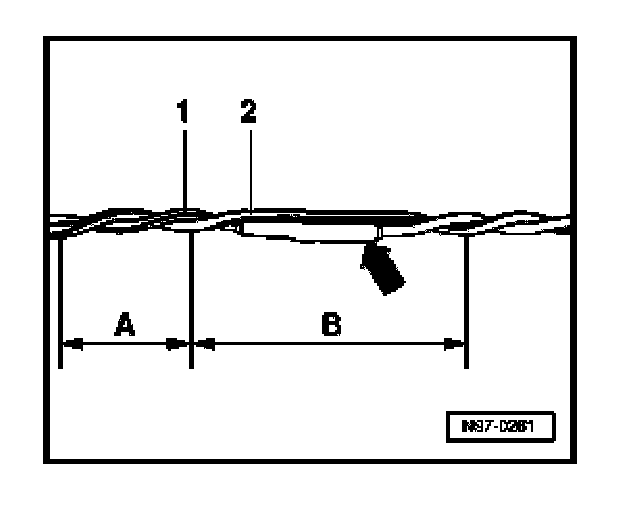

Information Bus: Service and Repair
CAN-Bus Wiring, Repair Measures

- CAN Bus wiring consists of unshielded, two-cable wiring -1- and -2- with a cross section of 0.35 sq.mm or 0.5 sq.mm.
- Color coding:
CAN high wire, Powertrain orange/black
CAN high wire, Convenience orange/green
CAN high wire, Infotainment orange/violet
CAN low wire, (all) orange-brown
CAUTION:
- Perform wiring harness repairs only with yellow wires from VAS 1978 Wiring Harness Repair Kit. Mark repair locations with yellow tape.
- Both bus wires must be the same length. When both wires -1- and -2- are twisted, length -A- = 20 mm must be maintained for the twist.
- No part of the bus wiring in the vicinity of heat-shrink sleeves -arrow-, may be greater than B = 50 mm without the wires being twisted.